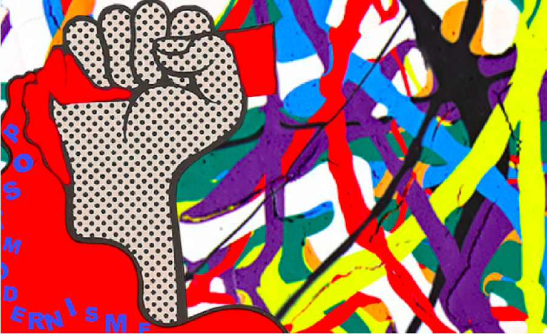
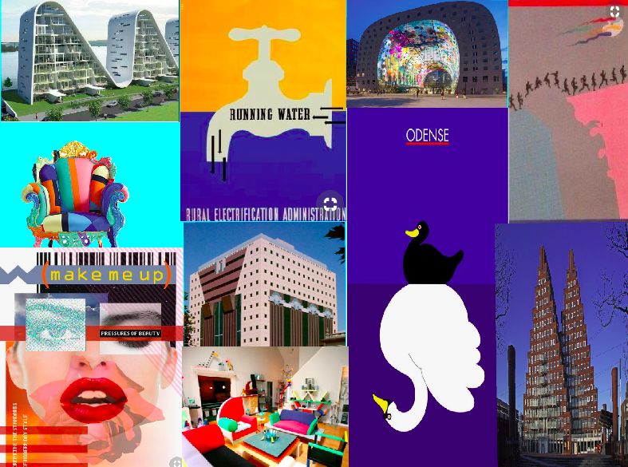

Faglige Mål
Formål
Dette var vores første opgave, da vi startede på Københavns Erhvervs Akademi (KEA). Vi blev introduceret til de grundlæggende faglige begreber inden for design af digitale brugergrænseflader, her html og css. Samt indholdsproduktion, digital kommunikation og responsivt webdesign. Derudover fik vi de første hands-on færdigheder, inden for billedebehandling i photoshop, opsætning af tekst og billeder i adobe Indesign og Adobe XD.
Anvendelse af teori
Jeg valgte at benytte Html og css, til at kode min stilartside. Vi blev sat i grupper, udvalgt af lærerne og fik til opgave at lave vores en hjemmeside, ud fra en stilart vi fik tildelt. Min gruppe fik tildelt stilarten ‘Postmodernisme’. Vi startede med at researche på stilarten, hvor vi kiggede på forskellige sider omkring hvad der var karaktertræk for postmodernisme. Der fandt vi fandt hurtigt ud af, at der var rigtig meget indhold og for det meste billede materiale. Efterfølgende skulle vi lave en segmentering og vælge et segment til vores stilart. Som vi så lavede en persona ud fra.
Anvendelse af viden
Farveteori
Med den viden som vi fik i farveteori og typografi skulle vi udarbejde et ‘Styletile’ som man vil associere med ‘postmodernisme’ og som var passende til vores segment. Vi skulle også udarbejde et splash billede, som skulle passe til forskellige formater og devices. Til sidst udarbejdet vi et favikon som skulle bruges til to ting, det skulle bruges som et logo til vores stilartside. Jeg valgte at designe mit favicon i adobe Illustrator
Flexbox
Vi introduceret til først HTML og hvad sproget indebar, derefter lavede vi et par øvelser med ren HTML, uden styling i CSS overhovedet. Nu skulle vi lære at anvende flexbox. Dette hjalp med forståelssen af hvordan (vores hjemmeside) skulle bygges op, med hensyn til sectioner, div’er og billeder.
Moodboard
Splashbillede
HTML eksempel med tilhørende CSS